Dior
Pop-Up Reservation & Check-In
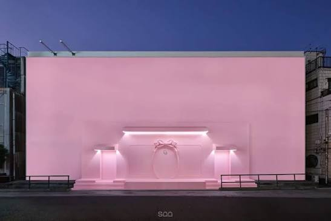
The Opportunity
For the Dior Addict pop-up in Shibuya in January 2026, Dior needed to welcome a large number of guests through a small venue without queues forming at the door. We partnered with the Dior team to build a reservation and check-in system that managed guest flow before and during the event.
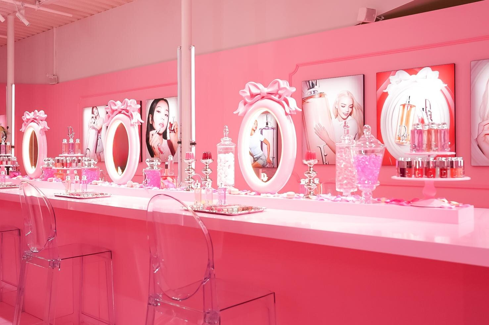
The Solution
To run the pop-up smoothly, we built a slot-based reservation flow for guests, a check-in tool for on-site staff, and the supporting infrastructure connecting the two. Guests reserve a time slot in advance and receive a confirmation; on the day, staff look up the reservation and mark them as arrived. Guests could also browse and purchase limited-edition items directly in LINE, joining a queue and getting called by staff once their item was ready. The result: capacity managed before the doors open, no queue outside, and a record of every visit.
Pre-Day Reservation
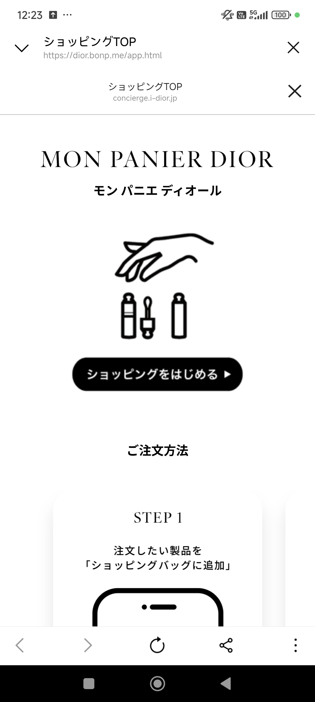
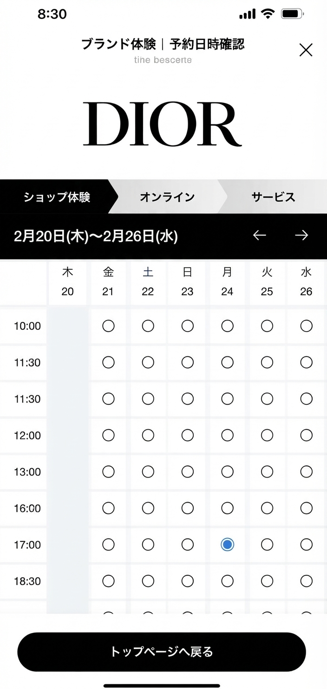
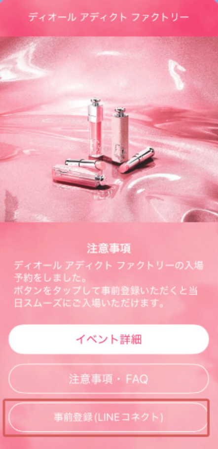
Check-In Platform
On the day, staff use the check-in platform to find each reservation and mark guests as arrived, keeping a live view of attendance against each slot's capacity. Walk-ins and changes are handled on the spot, so the plan set before the event holds through the day.
Pre-Day Reservation
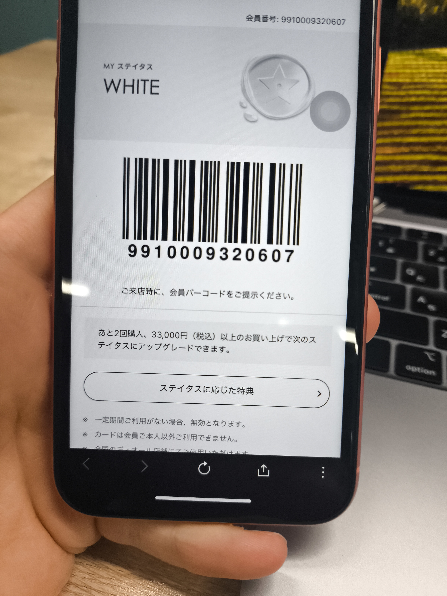
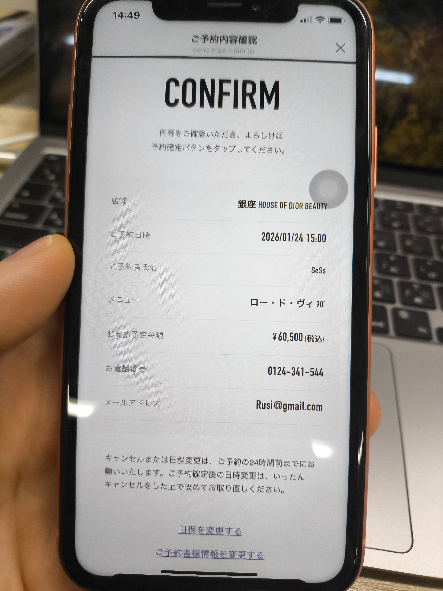
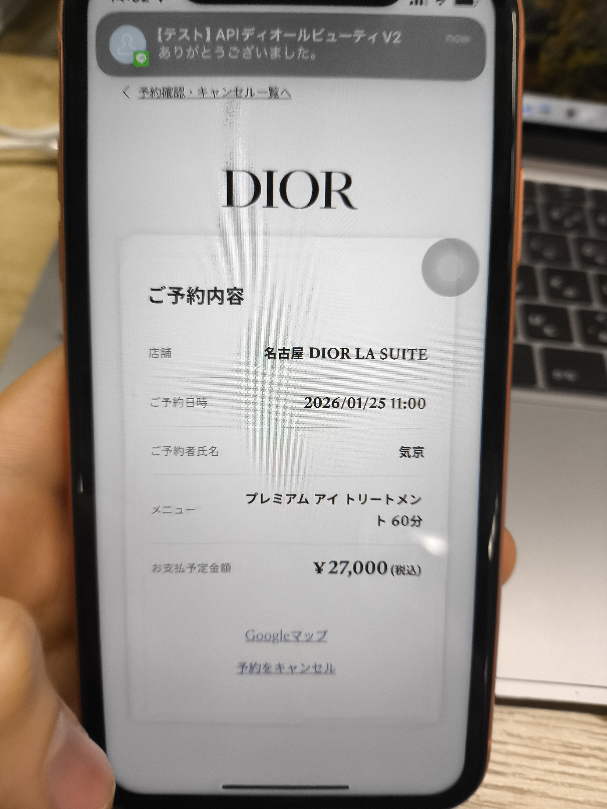
Day-of Check-In
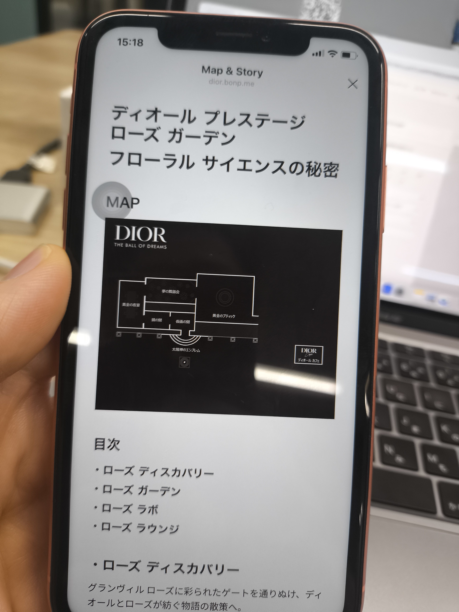
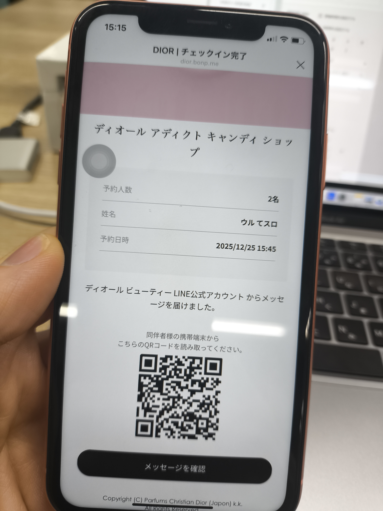
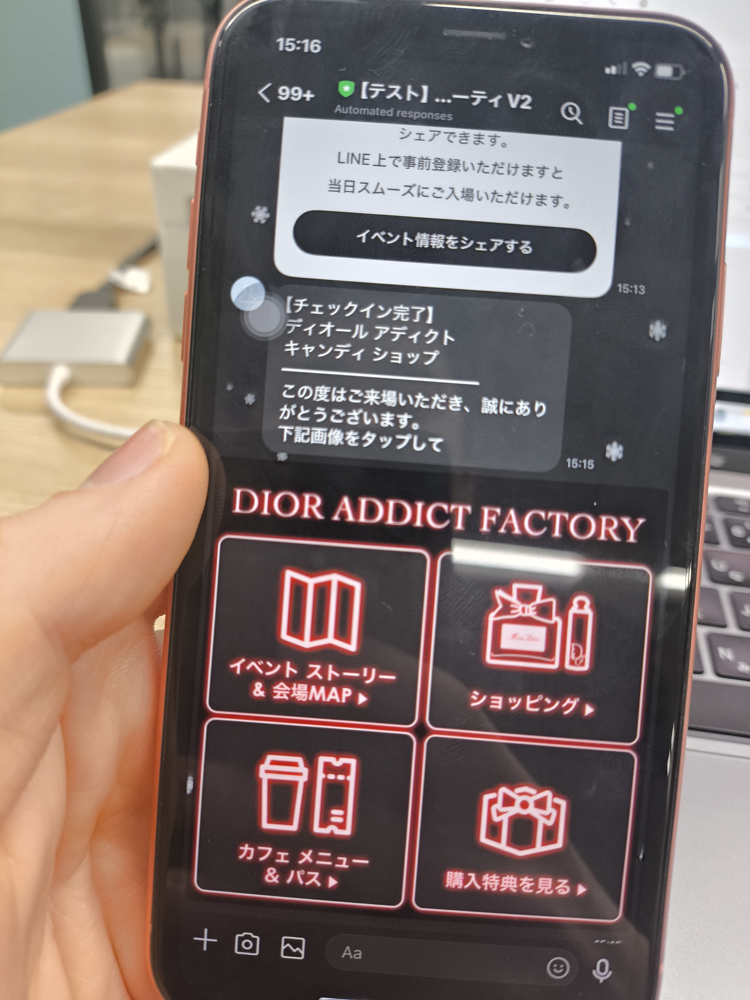
Day-of Shopping
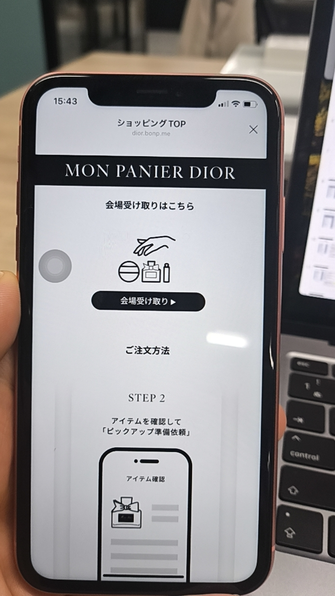
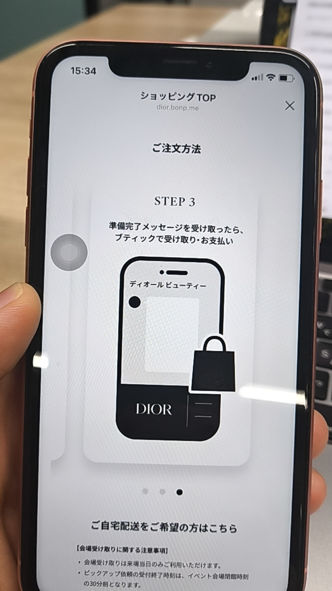
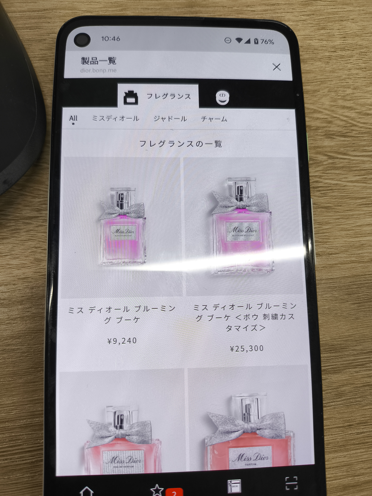